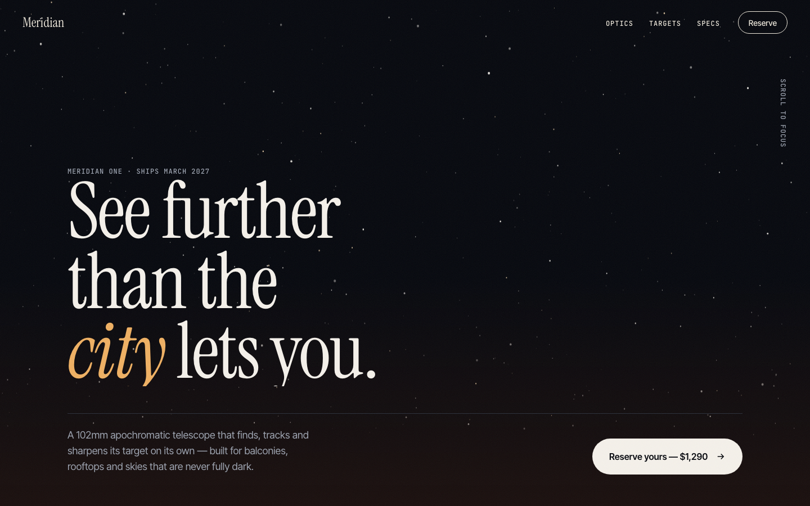
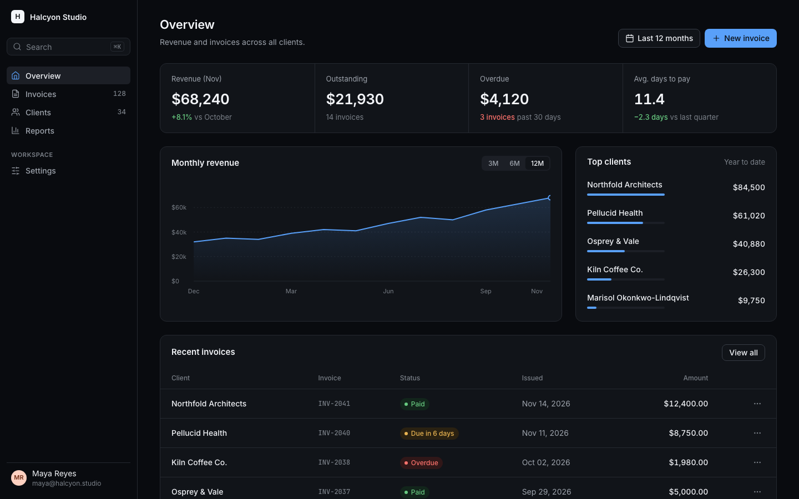
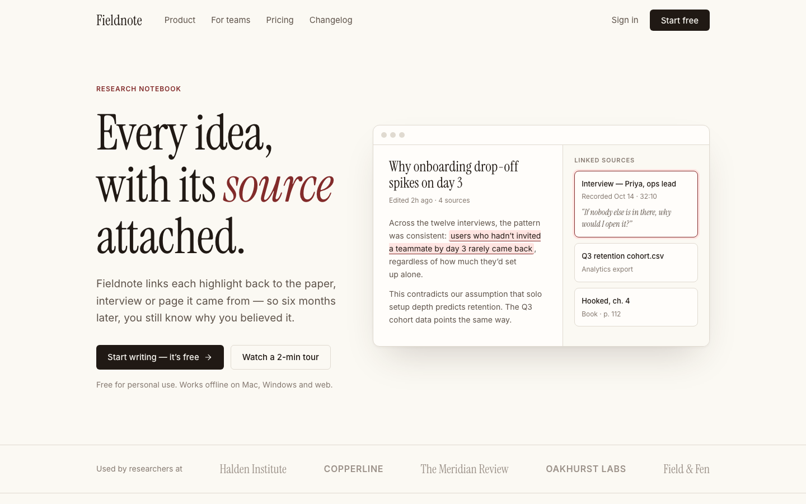
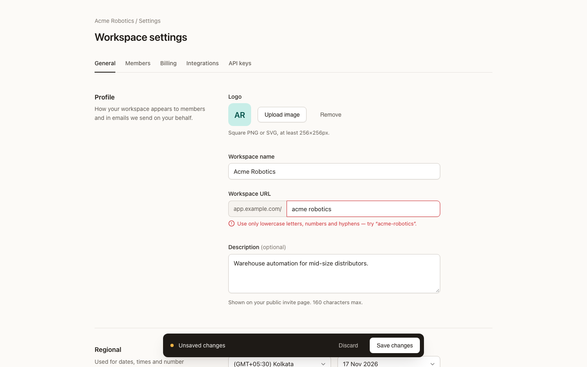

Claude Code, minus the AI look.
A skill that makes Claude design like the best product teams and studios — from Linear-grade product UI to scroll storytelling, kinetic type and 3D. It decides first, builds with intent, then renders the page and critiques what it actually made.
$ git clone https://github.com/jaiparmani/ui-craft-skill
$ cp -r ui-craft-skill/frontend-design-excellence ~/.claude/skills/
Then just ask for a UI. The skill triggers on its own. More install options
Six steps. The fifth is the one that matters.
Models can't judge a UI from its source code. The skill makes Claude open the page, screenshot it at three widths and several scroll positions, and fix what it sees before calling it done.
Brief
Mode, audience, the one primary action, a single direction — plus concept and signature moment for expressive work.
Tokens
A closed set of spacing, type, color, radius, shadow — and motion durations and curves.
Hierarchy
Size, weight, spacing, contrast first. Color last. Every state designed, real content only.
Motion plan
Only motion that shows hierarchy, creates continuity or rewards interaction. Right tool for each job.
Render & critique
Screenshot at 1440, 1024 and 390px, at several scroll positions, and with reduced motion. Fix. Repeat.
MandatoryReport
Mode, direction, concept, and what was checked visually. Briefly.
First, decide what kind of page this is.
A settings screen and an award submission need opposite instincts. The skill picks a mode before anything else, and the usable parts of any page — nav, forms, pricing — always follow product rules.
Product UI
Apps, dashboards, admin, settings, checkout. Clarity, speed, density, convention.
Like · Linear app · GitHub · Stripe DashboardPremium marketing
Product and launch pages. Product clarity plus a few precise, memorable moments.
Like · Apple · Linear · Stripe · RaycastExpressive
Portfolios, studios, campaigns, award submissions. One concept, one signature moment people remember.
Like · Locomotive · Active Theory · Resn · Bruno SimonBeautiful isn't the same as animated.
Motion has to communicate hierarchy, create continuity, or reward interaction — otherwise it's cut. The skill knows six patterns, when each one earns its place, and how to build it.
Scroll storytelling
Elements enter, scale and reveal as you scroll. Launches and long-form pages.
Study · Apple product pagesPinned sections
A section holds still while its content changes. Step-by-step feature stories.
Study · GSAP ScrollTrigger demosKinetic typography
Text arrives word by word or line by line, through clipping and masks.
Study · Awwwards, CodropsMicro-interactions
Magnetic buttons, cursors, hover transitions, responsive feedback.
Study · Linear, RaycastParallax
Layers move at different speeds to create depth. Subtle, never nauseating.
Study · Creative agency portfoliosPage transitions
Shared elements and route changes that keep visual continuity between pages.
Study · Locomotive, Active TheoryThe right tool for each job
Default toolkit: CSS + GSAP + Motion. Three.js only when the experience genuinely benefits from 3D.
@starting-styleSeventeen tells, and what to do instead.
Each one signals “generated” the moment a person sees it. The skill names them so Claude can catch them in its own first draft.
:focus-visible ring in the accentPick one direction. Commit to it.
Mixed styles look accidental. Nine directions — seven shown here, plus Immersive Studio and Kinetic Editorial for expressive work — each a full bundle of type, color, radius, density and motion.
Precise Product
Hairline borders, restrained color, dense controls, first-class dark mode.
Dev tools · SaaS · dashboardsEditorial
Serif display, warm paper, rules instead of cards, generous measure.
Content · docs · portfoliosWarm Friendly
Humanist type, soft radii, pill buttons, cheerful but not neon.
Consumer · onboarding · educationSwiss
Visible grid, square corners, huge type, one loud spot color. This page.
Portfolios · creative tools · eventsPremium Dark
Deep layered surfaces, cinematic scale, one luminous accent.
Launches · premium productsData-Dense Pro
13px type, tabular numbers, 32px rows, color reserved for status.
Internal tools · analyticsSoft Modern
Calm neutrals, a deep trustworthy accent, big clean numerals.
Finance · B2BThe skill picks a default for each kind of product.
Or follow the brand you already have — consistency beats taste.
A closed set of values.
When something “needs” 13px, pick 12 or 16. Consistency reads as quality. The skill ships ready-to-paste scales and a starter tokens.css with light and dark themes.
Spacing · 4px base
Type · app scale
Color · OKLCH ramps
Neutrals tinted toward the accent hue. Change one number and the whole ramp follows.
Assume there are three problems. Find them.
Claude runs the critique against a screenshot, not the code — from a five-second squint test down to tap targets on a phone.
- Is the most important thing the most prominent?
- Are gaps inside groups smaller than gaps between them?
- Six type sizes or fewer, three weights or fewer?
- Does muted text still pass 4.5:1 contrast?
- Hover, focus, disabled, empty, loading and error — all designed?
- At 390px: no sideways scroll, 44px tap targets?
- At 1024px: does anything wrap badly in between?
- Would anyone guess this came from a template?
It caught bugs in its own examples.
Before shipping, the skill's example pages went through the same loop. The screenshots found problems the code read-through had missed:
Text touching the screen edge. Cause: padding: 112px 0 on a section silently overrode the container's side padding. Fix: padding-block.
The logo strip wrapped with one name orphaned on its own line.
In the pinned sequence, the outgoing and incoming step text overlapped for a few frames. Fix: finish one fade before the next starts.
The page was 618px wide on a phone: a 1fr grid column grew to fit a code block. Fix: minmax(0, 1fr).
A tab label and the save button broke onto two lines; the save bar's text took three.
Each lesson went back into the checklist, so future runs look for it.
Four reference pages to calibrate against.
Complete single-file pages across all three modes. Claude studies them before building something similar — and so can you.

Motion launch
Line-mask headline, parallax stars, a pinned focus sequence, horizontal gallery, magnetic CTA, full reduced-motion fallback.
Expressive · GSAP + Lenis

Dashboard
App shell, KPI row, a chart with a story, a table with right-aligned numbers and soft status badges.
Precise Product · light & dark

Landing page
Asymmetric hero with a real product visual, alternating feature rows, a testimonial, pricing.
Editorial

Settings form
Labels above inputs, inline validation, toggles vs checkboxes, a danger zone, a sticky save bar.
Precise Product · warm
Studied from the best work on the web.
Every rule traces back to a source the skill cites, with a note on what to study in each — for principles, never to clone.
Award-winning studios
Premium product
Galleries & experiments
Two commands. Then ask for a UI.
Claude Code loads skills from ~/.claude/skills for every project, or from .claude/skills inside a single repo.
- Get the skill
git clone https://github.com/jaiparmani/ui-craft-skill
- Install it for all projects
cp -r ui-craft-skill/frontend-design-excellence ~/.claude/skills/
Or copy it into one project's
.claude/skills/folder. - Ask for any UI
“Build a pricing page”, “this form looks amateur”, “make the dashboard look professional” — the skill triggers on its own. Type
/frontend-design-excellenceto call it directly.
frontend-design-excellence/ ├── SKILL.md workflow + anti-slop list ├── references/ │ ├── principles.md hierarchy, type, color │ ├── tokens.md scales and CSS variables │ ├── aesthetics.md seven directions │ ├── components.md patterns and page recipes │ ├── expressive.md award-level design │ ├── motion.md six motion patterns │ ├── tech-stack.md GSAP, Motion, Lenis, 3D │ ├── review-checklist.md the critique loop │ └── sources.md where it all comes from ├── examples/ │ ├── dashboard.html │ ├── landing.html │ ├── settings-form.html │ ├── motion-launch.html │ └── before-after.md ├── assets/tokens.css └── evals/ test prompts + checks